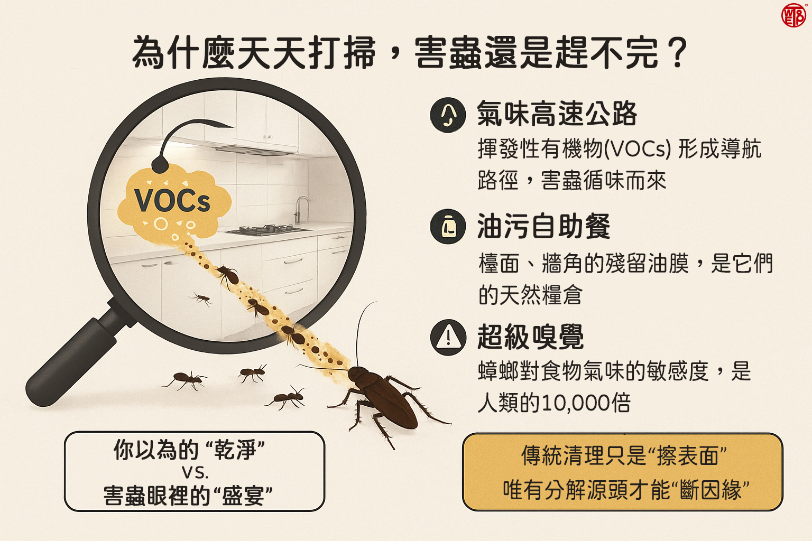

"
自從廚房安裝了WETOP環境淨化器，最直接的感受就是油煙味和一些不好聞的氣味幾乎都消失了。以前煮完齋菜，整個廚房甚至齋堂都會有濃厚的味道，現在空氣變得非常清新。更讓我們驚訝的是，原本光滑的廚具和牆壁表面，摸起來不再有那種油膩感，清潔起來也輕鬆許多。最神奇的是，過去一直讓我們頭痛的蟑螂和螞蟻，在沒有使用任何藥物的情況下，真的就慢慢地、自然地不見了。現在，廚房成了一個真正清淨的地方，我們準備供齋時，內心也更加安定與歡喜。— 某精舍師父